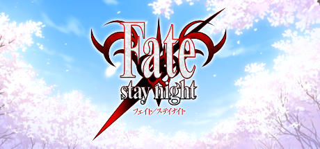
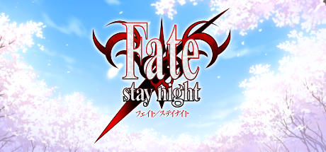
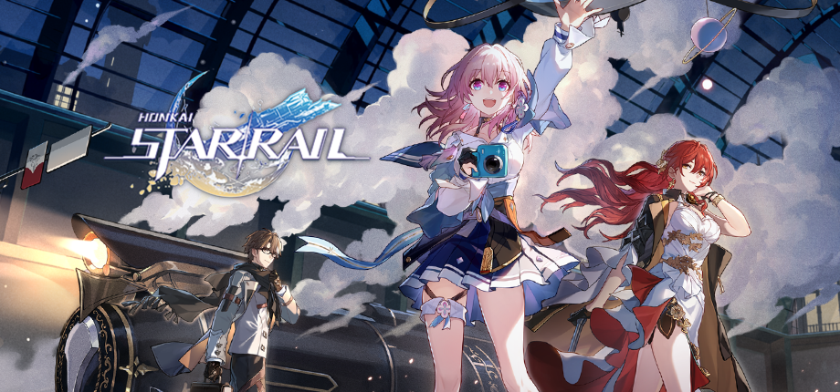
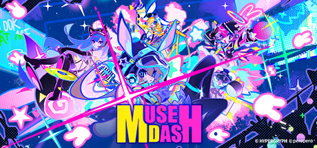
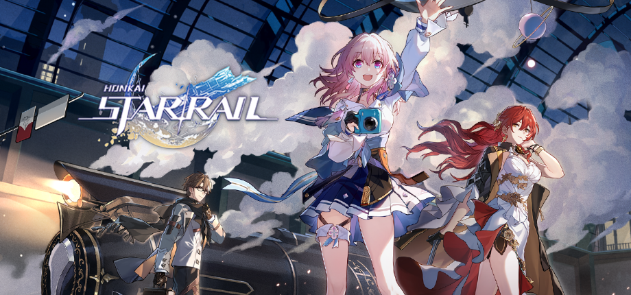
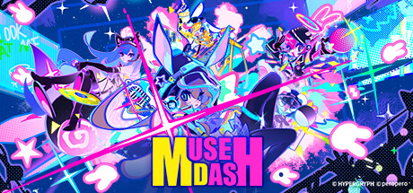

Hello!!! My name is Austin Igneous Philip.
If you want to know me, you are on the right page.
My name is Austin, and I'm a second-year student at Simon Fraser University studying Computer Science. Initially, I was taking Sound too, but it got too hectic with CS TwT. I love programming, and it has been a long-time passion of mine since I was a kid, but like most kids, I procrastinated a lot. That's why I took CS, and I don't regret it (kinda).
You'll catch me reading comics, playing games, or making music in my free time. You may even catch me wandering around outside randomly sometimes with no real aim on where I want to go. I also love collecting plushies, figures, and Album CDs (Particularly of HATSUNE MIKUUU)

What am I up to?
- Currently trying to do as many projects as I possibly can. Why not? (I wanna populate my portfolio a bit).
- I'm also focusing on music production since it's my other passion.
- My cource load this semester is also quite heavy, so you may find me studying in the libraries during the weekends.
What do I plan on doing ahead?
- As a student, I can only study and make projects right now. Maybe even apply for internships here and there.
- I also want to focus more on music production cause I'm really enjoying it. I will probably take more sound courses and get good at this.
- Going Forward, I also want to make many more projects with others, big or small. Does not matter. I have to learn collaboration and overall I have fun coding.
Want to know more about me???
Here are some games I like:
 

 





Here are some songs I like: